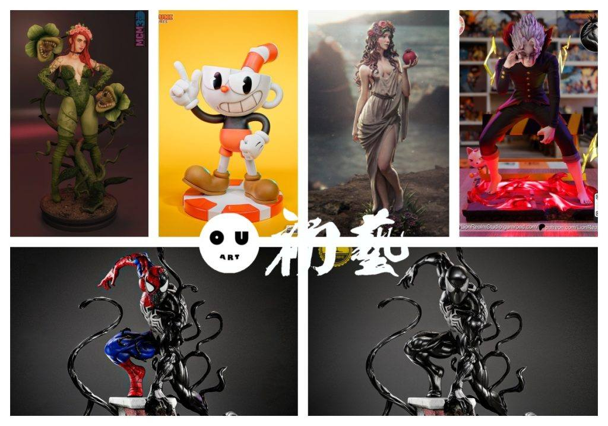
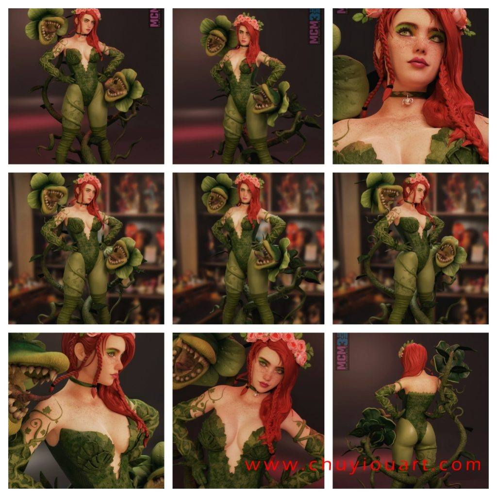
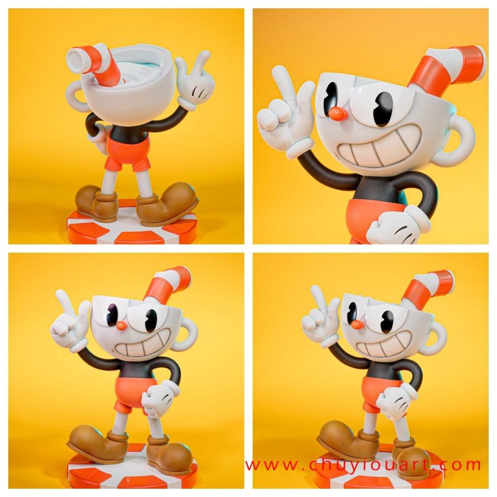
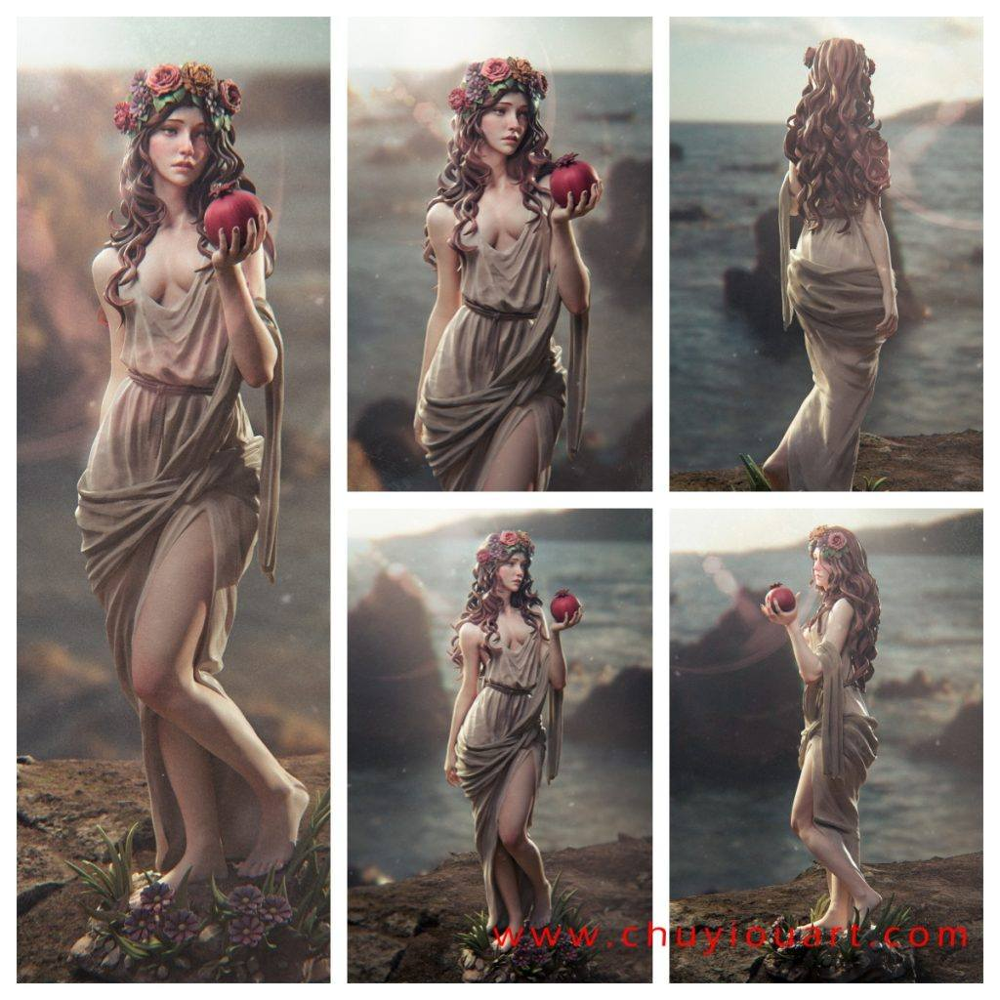
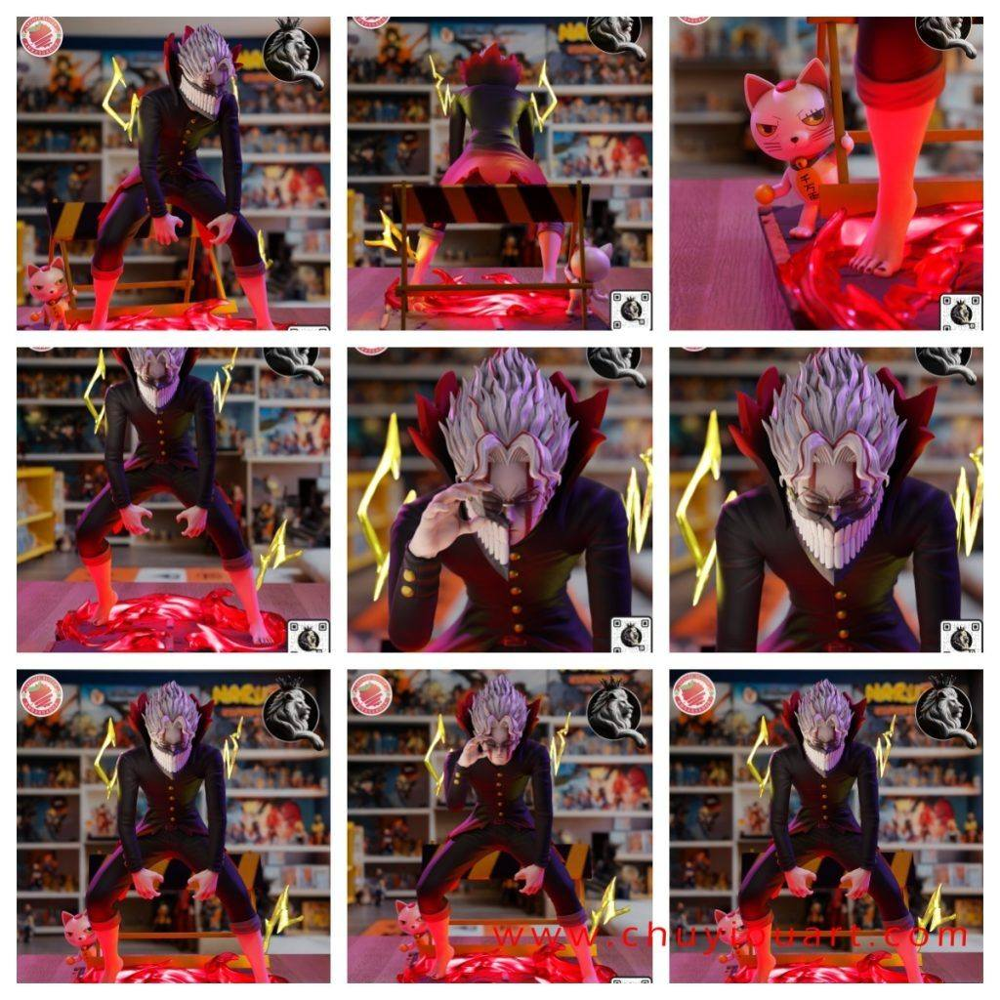
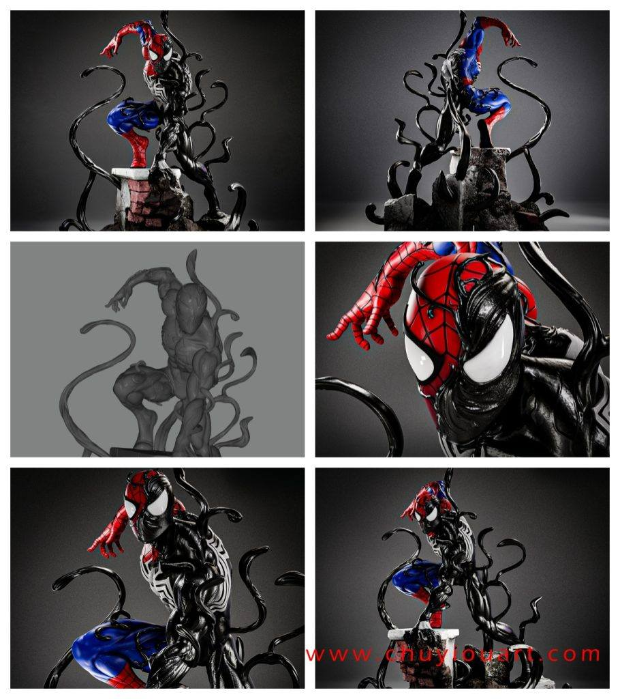
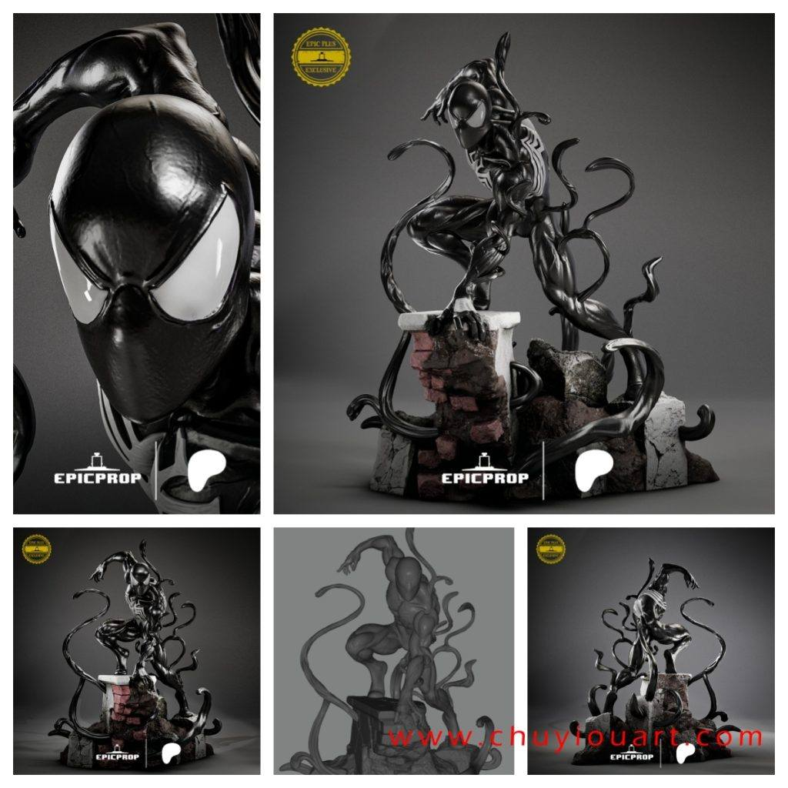

模型分享
12月10日STl图纸文件分享

1.毒藤女，细节很好，分件细致，植物素材优秀。

2.茶杯头，经典造型，中规中矩。

3.冥后珀耳塞福涅，雕像造型，光固化走起。

4.高仓健《当哒当》，变身造型，高速婆婆不是很还原，整体还是帅的，多形态设计。

5.蜘蛛侠双形态，两个模型是不同的，附体状态比毒液状态多了纹理，还是比较细致的。


链接:
https://pan.baidu.com/s/1RIwi_s0Uy74WC3_0PEkdqw 提取码: xeem
以上内容仅供个人使用（非商用）
ONLY for PERSONAL (NON-COMMERCIAL) use.
加群获得更多免费模型！

可加微信备注“模型资源”入群：chuyimeishu01